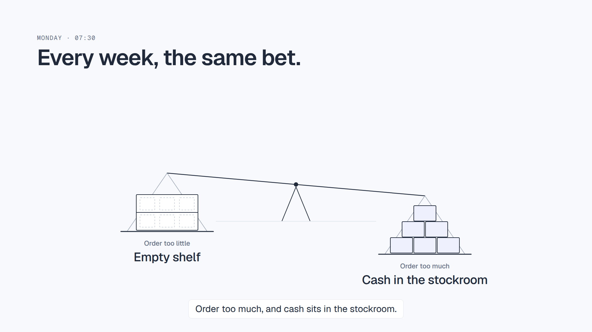
A thin balance beam tips between an empty shelf and cash in the stockroom. VO: “Every week, a store owner makes the same bet…”
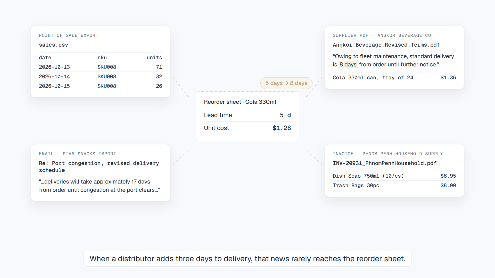
The four real demo documents sit apart. The Angkor “5 → 8 days” change never reaches the reorder sheet.
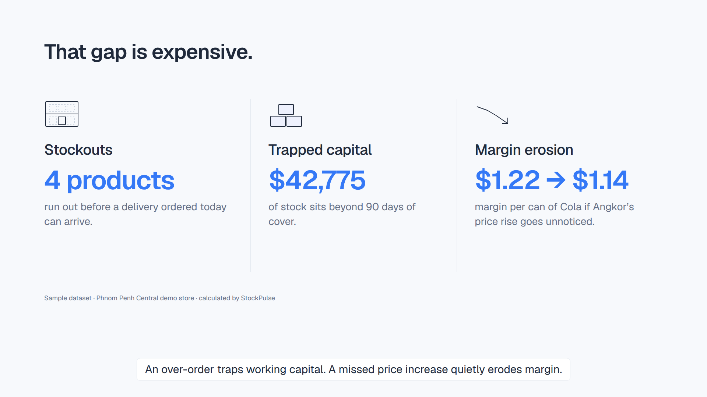
Stockouts, trapped capital, margin erosion. Figures from the demo store; the Cola margin per can comes from the real price and costs.
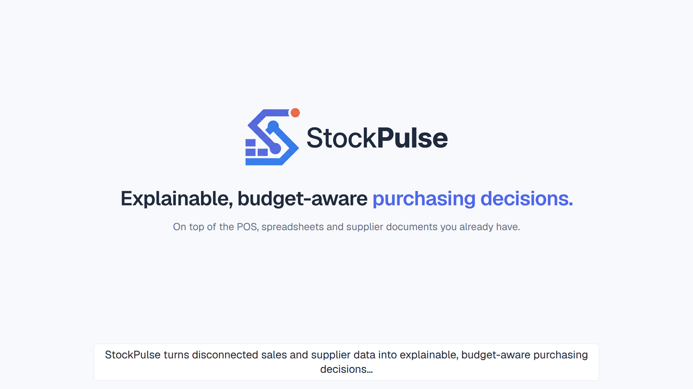
The logo resolves, then the promise line.
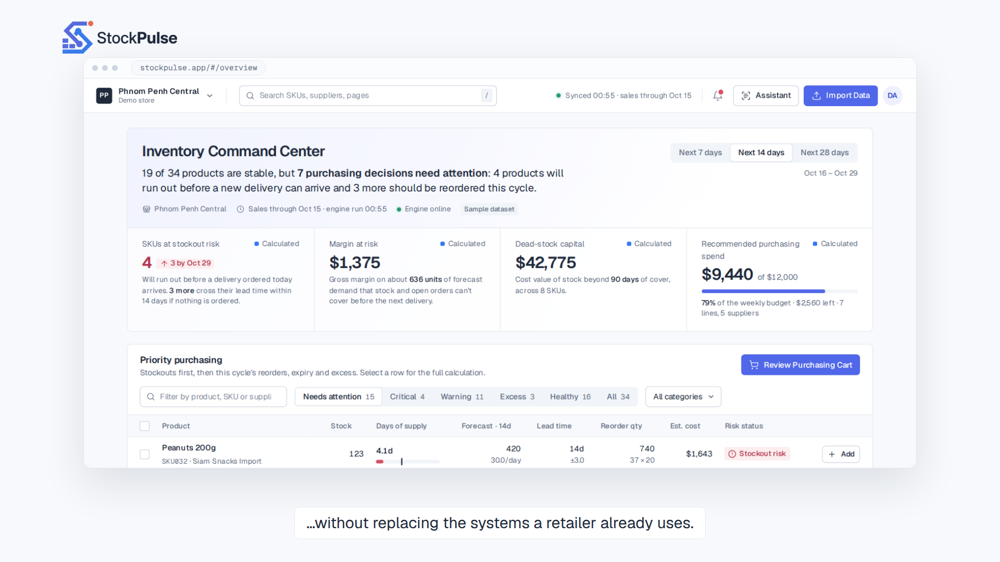
The camera pushes into the real Inventory Command Center.
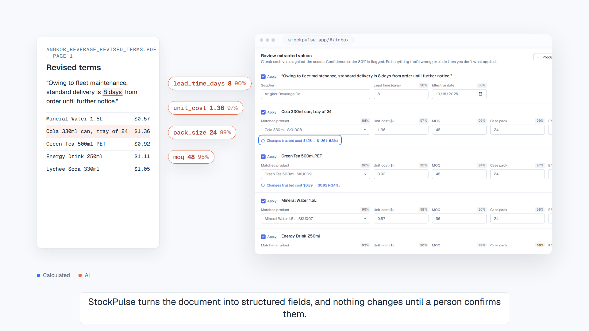
Fields lift out of the Angkor PDF (ember) and dock into the real review form. A person confirms.
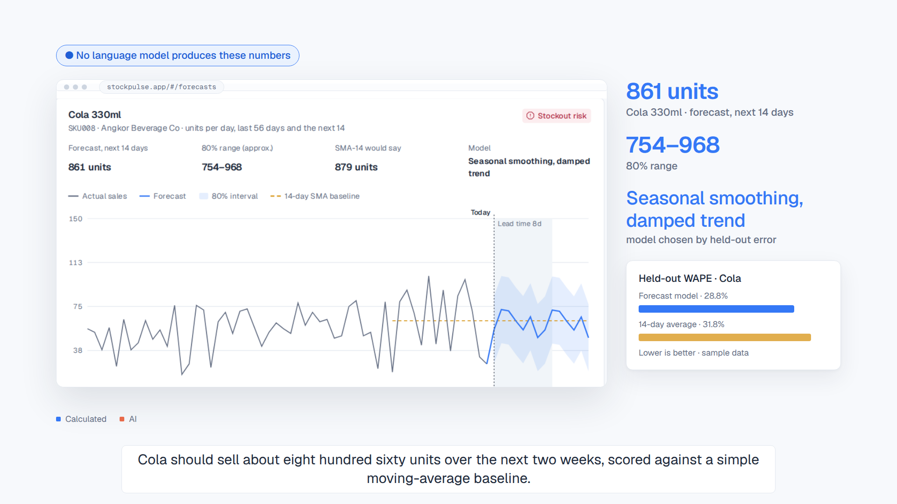
Real Cola chart: 861 units, 80% range, model compared with the 14-day average.
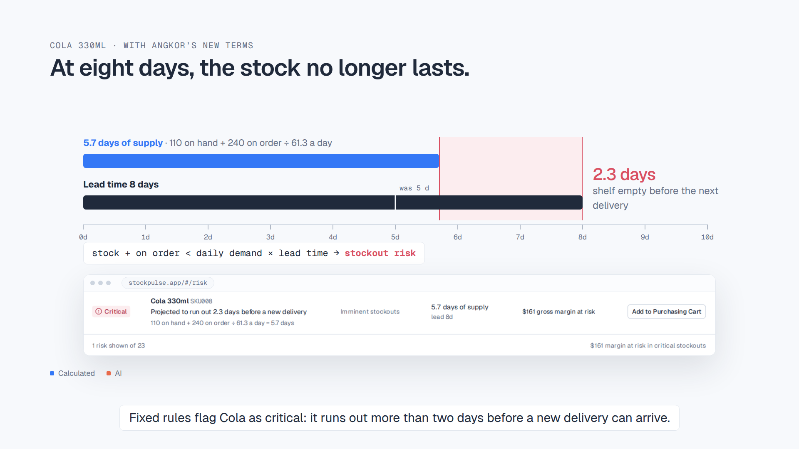
5.7 days of supply against an 8-day lead time leaves a 2.3-day gap. Real Risk Radar “Critical” row.
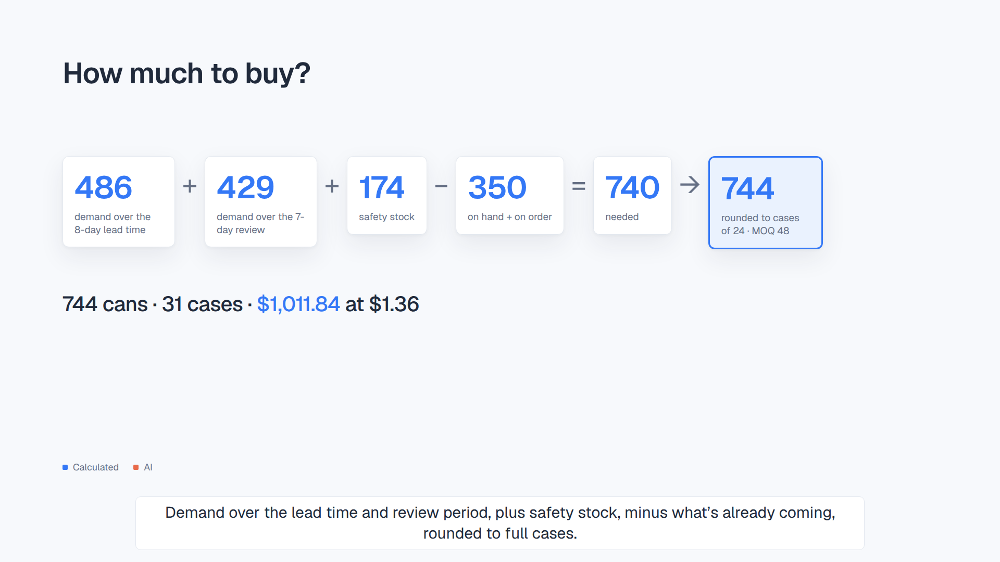
486 + 429 + 174 − 350 = 740, rounded to cases → 744 cans · $1,011.84.
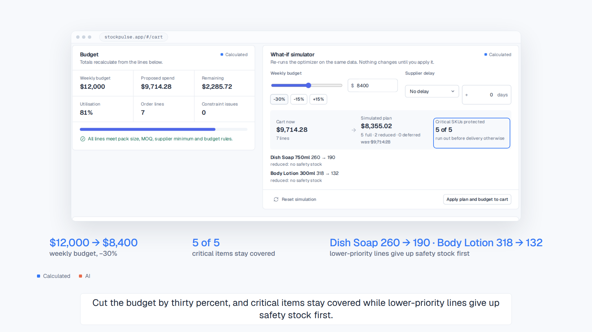
Real what-if: $12,000 → $8,400; 5 of 5 critical items stay covered; Dish Soap and Body Lotion give up safety stock.
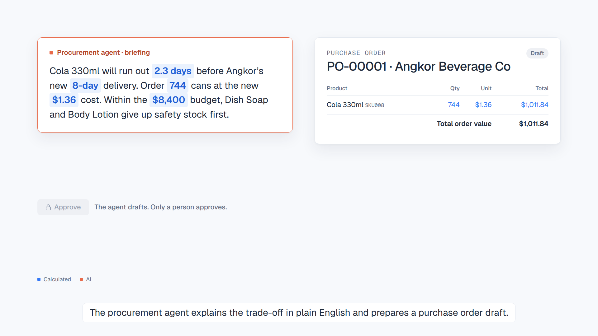
The ember briefing card uses only calculated values (blue tokens); PO-00001 takes shape; Approve is locked for the agent.
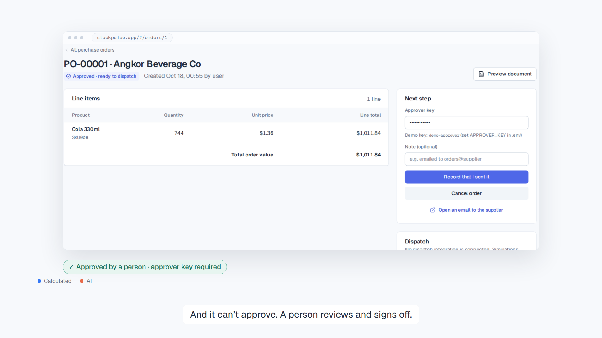
Real PO-00001: Approved · ready to dispatch, with the approver key.
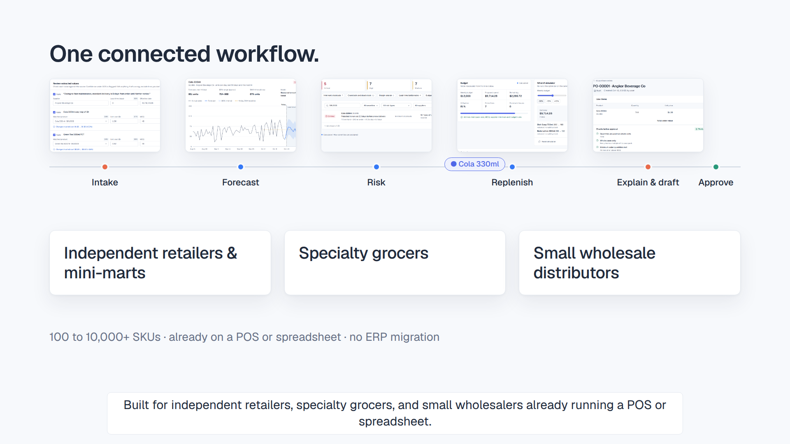
Five capabilities on one line, with Cola travelling through; three user types.
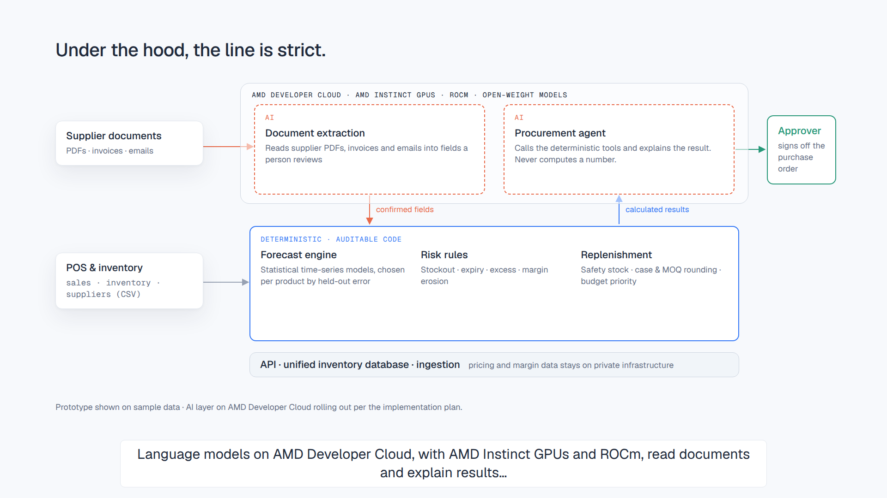
AI layer inside the AMD Developer Cloud boundary, deterministic core below, backend, approver. Disclosure footer.
Logo, tagline, quiet fade to the light background.